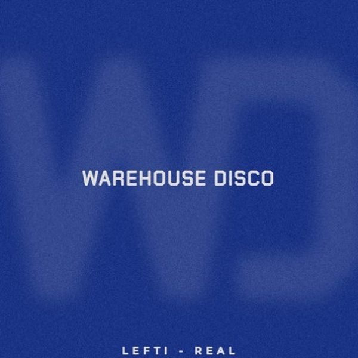

I 18 dischi e le top 6
 1
MADMartin Garrix, Lauv
1
MADMartin Garrix, Lauv
 2
Like I Like ItMau P
2
Like I Like ItMau P
 3
The RhythmR3WIRE
3
The RhythmR3WIRE
 4
Missing (feat. Mingue)EDX
4
Missing (feat. Mingue)EDX
 5
All My LifeR3HAB
5
All My LifeR3HAB
 6
RhythmLesgo
6
RhythmLesgo
 7
EYSama (US)
7
EYSama (US)
 8
LegacyESSEL
8
LegacyESSEL
 9
Gira (David Guetta Remix)Unfazed
9
Gira (David Guetta Remix)Unfazed
 10
Rave MusicGabry Ponte,Nicky Romero
10
Rave MusicGabry Ponte,Nicky Romero
 11
Techno VibesAlex Now (ES) ft. Nancie
11
Techno VibesAlex Now (ES) ft. Nancie

12 RealLEFTI 13
Lo CubanoFabien Pizar, Oscar B
13
Lo CubanoFabien Pizar, Oscar B
 14
FluteChico Rose
14
FluteChico Rose
 15
Para ParaAntoine Clamaran
15
Para ParaAntoine Clamaran
 16
OscillateHarvard Bass, Shaded (LA)
16
OscillateHarvard Bass, Shaded (LA)
 17
Doing Nothin'Don Diablo x Nelly Furtado
17
Doing Nothin'Don Diablo x Nelly Furtado
 18
I Was Made For Lovin' YouWade
18
I Was Made For Lovin' YouWade
La tracklist
- 1 MAD Martin Garrix, Lauv Intercord
- 2 Like I Like It Mau P Diynamic Music
- 3 The Rhythm R3WIRE KNOW WHERE
- 4 Missing (feat. Mingue) EDX Sirup Music
- 5 All My Life R3HAB Island Records
- 6 Rhythm Lesgo AETERNA Records
- 7 EY Sama (US) Spinnin' Records
- 8 Legacy ESSEL Toolroom Records
- 9 Gira (David Guetta Remix) Unfazed Spinnin' Records
- 10 Rave Music Gabry Ponte,Nicky Romero PENTAPHONIA
- 11 Techno Vibes Alex Now (ES) ft. Nancie Hexagon
- 12 Real LEFTI Warhouse Disco
- 13 Lo Cubano Fabien Pizar, Oscar B Afrotribe Records
- 14 Flute Chico Rose Municipal Recordings
- 15 Para Para Antoine Clamaran Toolroom Records
- 16 Oscillate Harvard Bass, Shaded(LA) Insomniac Records
- 17 Doing Nothin' Don Diablo x Nelly Furtado Don Diablo/Casablanca/UMe
- 18 I Was Made For Lovin' You Wade Criterio Music